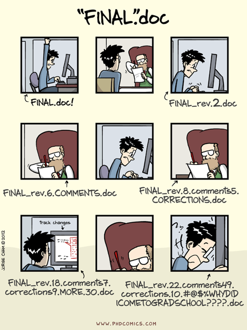
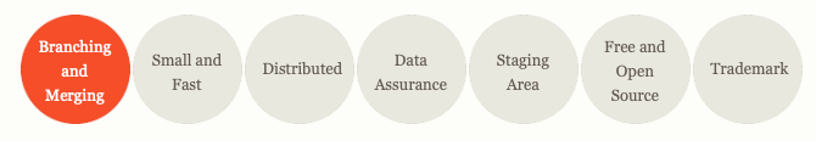
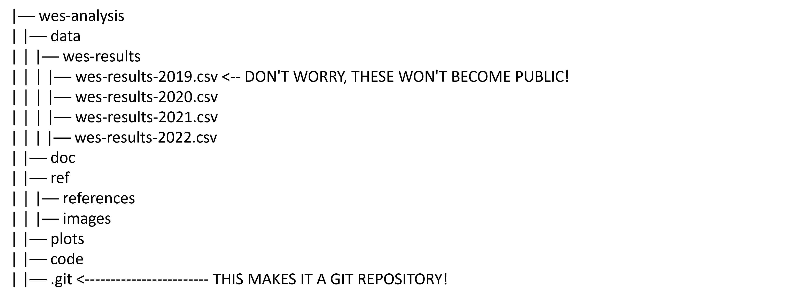
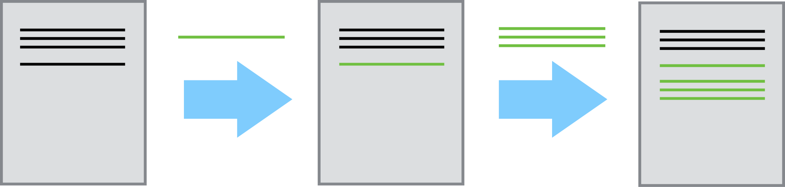
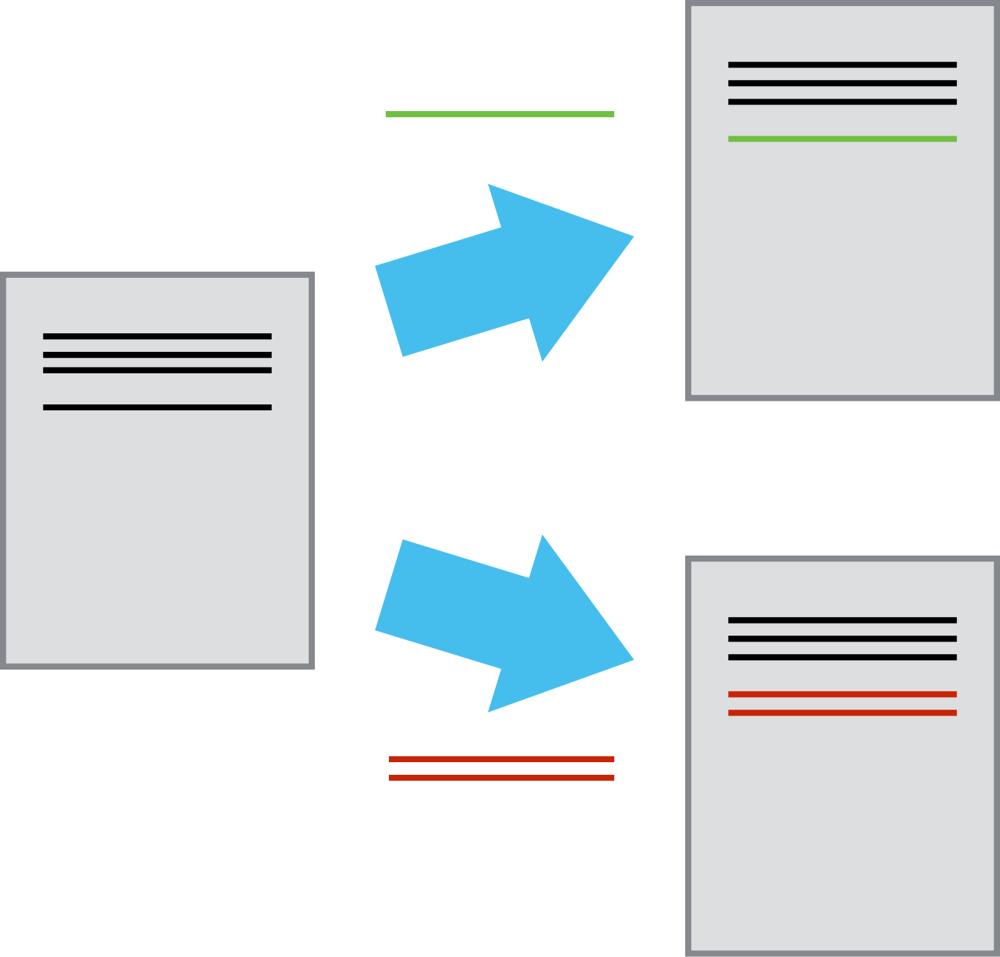
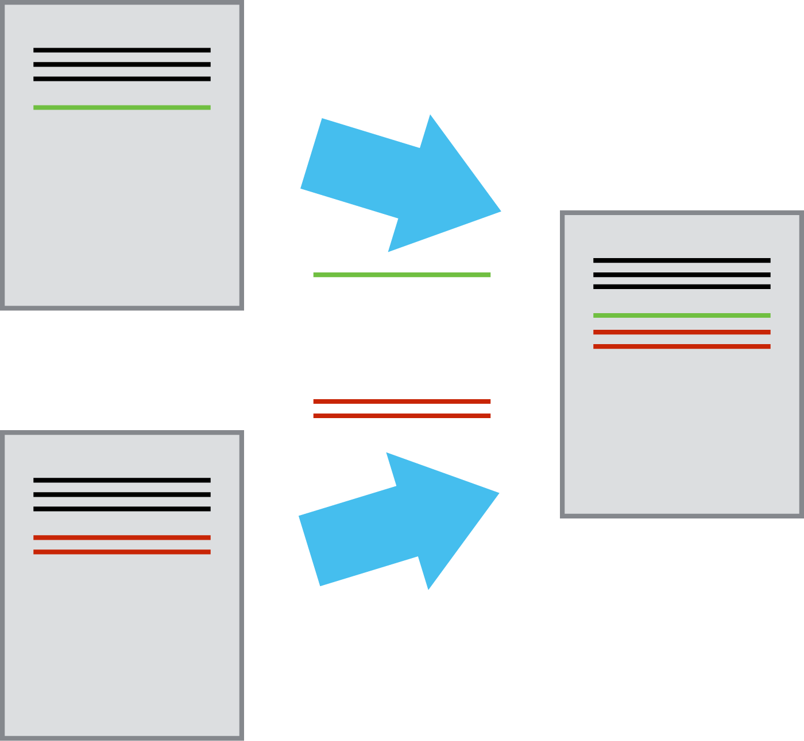
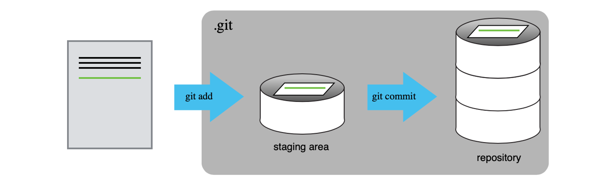

Version Control using Git + GitHub
BC Stats Workshop
January 29, 2025
To Code Along: Installation & Set Up
- Install Git (comes with Git Bash): https://git-scm.com/download/win
- Configure Git: follow these steps
- Create GitHub account (can do over break if needed)
- Log-in
- Set-up 2MFA
- Create a Personal Access Token
Learn more: Software Installation Guide
To Code Along: Installation & Set Up
What about code?
BC Stats has A LOT of source code that make:
- aggregate / “tidy” data tables
- figures/plots & maps
- PDF reports
- dashboards & applications
- prediction models
- provincial statistics
{kind=link}
Workshop Outline
- Why version control for code?
- Setting up our first Git repository
- Sharing code on GitHub
- Open-source code with BCGov GitHub
Course Materials: https://bcgov.github.io/ds-intro-to-git


Why these tools?
Enter Version Control

Source: https://git-scm.com/about
Repository

Changes saved sequentially

Branching

Collaborating
- Multiple users: different people work on their own copy
- Compare and merge contributions from multiple people

Jargon
- Repository (repo)
- Stage/Add
- Commit
- Push
- Pull
- Clone
- Branch
- Fork
Create our first repository!
Bash Jargon
Bash Jargon
#| class-output: output
$ git init # initiate a repository in the current directory
$ git status # indicate if there are any changes to files
$ git add <filename> # add a new file/change to the staging area
$ git commit –m “commit message” # commit all staged changes to the repository
$ git log # view commit history
$ git diff # show changes between commits
$ git restore # restore file/s to previous commitLocal Repository
GitHub
- Hosting service for git repositories
- Greatly facilitates collaboration
Git: Version Control + Hub: Centralized repos & networking/collaborating